01 背景与数据瓶颈
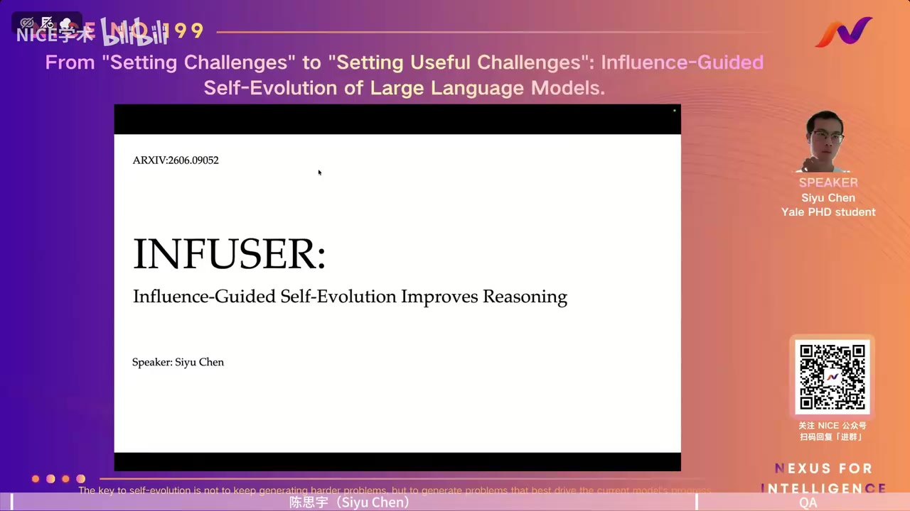
00:00:00主持人欢迎大家参加第199期NICE Talk。今天请到耶鲁大学统计与数据科学方向的博士生陈思宇，介绍他关于大模型推理、自我进化的最新工作。
00:00:00陈思宇谢谢介绍。今天报告的论文是《INFUSER: Influence-Guided Self-Evolution Improves Reasoning》。自我改进是近来很受关注的话题；我们用影响力分数衡量每份训练样本对最终表现的贡献，并据此同时改进出题器和解题器，形成共同进化的循环。
00:01:00整理说明主持人介绍讲者的研究还涉及Transformer的训练动态和内部机制。本次主题是如何利用影响力分数指导大模型自我进化，提升推理能力。讲者在开场说明，分数衡量的不是题目表面难度，而是训练这一样本对模型最终表现的贡献；之后会解释为什么需要同时更新出题器与解题器。
00:02:00陈思宇先讲背景。这里研究的是强化学习训练。随着训练数据和训练步数增加，模型在pass@1和pass@16等指标上还能持续提高，这显示出扩展训练的潜力。关键技术是可验证奖励强化学习（RLVR）：对一道题采样多个回答，用正确答案、Lean证明或代码单元测试检查结果，再根据奖励更新策略。GRPO及其变体都在利用这种反馈，让高奖励回答更可能出现。
00:03:00陈思宇举例来说，同一训练题可以让模型采样八个或更多答案。数学题可以用形式化检查，或直接核对最终数值；代码题可运行单元测试。模型先得到每个采样答案的结果反馈，再调整生成策略，提高获得正确结果的概率。不同算法的细节不完全一样，但都依赖可验证的结果信号。
00:04:00陈思宇与监督学习相比，RLVR不需要逐步示范，只要能够判断结果对错，就能得到相对便宜、可扩展的训练信号。数学题可以与标准答案比较，编程题可以运行测试。但要扩大这种训练，我们不仅需要题目，还需要可信的参考答案或验证器。互联网上的网页、论文、教材和环境虽然很多，却大多不是可直接用于RLVR的结构化数据。
00:05:00整理说明讲者用供需关系描述数据瓶颈：供给端有大量网页和arXiv论文等材料；需求端却是“题目加可信判分依据”的训练对。原始资料不会自动变成可验证题。DeepSeek-R1-Zero等工作展示了基于规则的奖励可以引出推理能力，也让数据量能否继续扩展成为关键问题。
00:06:00陈思宇把原始材料转为问答训练数据的部分，我们称为生成器。它可以是单个强模型，也可以是“提出—验证—修改”的智能体流程。如果生成器始终不变，解题器逐渐变强以后，它出的题很快就会失去价值；生成器反而成为训练的瓶颈。因此，训练解题器的同时也应改进生成器。另一方面，解题器需要随能力变化而调整的课程，而不是一份固定题库。
00:07:00陈思宇如果只使用一个固定的大模型或一套固定代理流程产题，初期也许足够，但解题器提升后，生成器继续提供旧层次的题就不合适。这里的“共同进化”不是把两者混为一个网络，而是让负责供应训练题的部分与负责学习的部分互相提供反馈，持续调整。
00:08:00陈思宇有研究按当前解题器的答对率将题目分桶：太难的题接近零正确率，太容易的题接近百分之百。约50%正确率的题，在有效更新比例、梯度和最终测试表现上往往更合适，图形呈倒U形。随着解题器进步，同一题目的难度位置也会改变；静态题库会逐渐变得过易或过难。所以我们既要让生成器同步进步，也希望它能提供贴近当前学习前沿的题目。
00:09:00整理说明讲者特别指出，“50%左右正确率”只是前人研究中很有启发的经验位置，而不是对每道题效用的直接证明。在训练过程中，原本处于适中难度的题会随着模型成长变容易；如果题库不更新，就难以长期保持有效的梯度信号。后面会进一步质疑仅靠这项难度指标是否足够。
00:10:00陈思宇整个循环是这样的：从教材、网站等非结构化文档出发，生成器提出题目及参考答案，组成训练课程；解题器作答，通过可验证奖励进行RLVR更新；随后观察哪些题目使目标任务表现提高、哪些可能损害表现，把反馈返回生成器。困难在于如何设计这个反馈。现有研究大致有两类思路：一类按题目难度奖励，另一类直接测量题目给解题器带来的性能改进。
00:11:00陈思宇可以把这个系统看成四个相连环节：文档来源、生成的问答课程、解题器的强化学习、将最终表现变化反馈给生成器。对于生成器，关键不是“解题器能不能回答”本身，而是“这些回答及随后的训练，是否让我们真正关心的任务表现变好”。两类现有奖励各回答了其中的一部分。
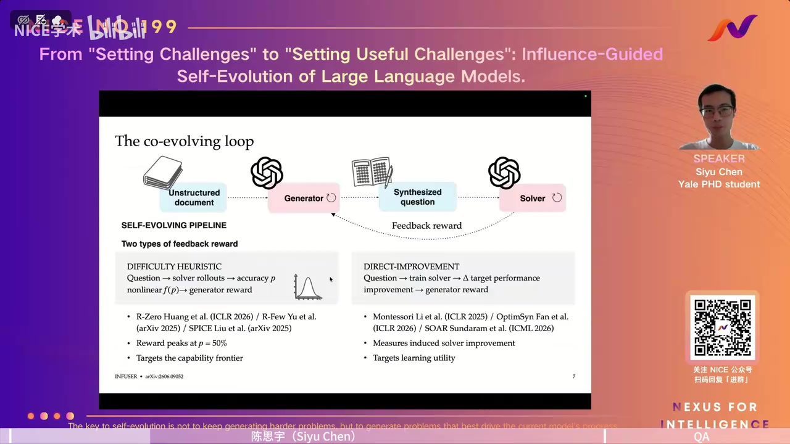
00:12:00陈思宇难度启发式把解题器在某题上的正确率记作 p，再通过一个在 p 约为 0.5 时达到峰值的函数给生成器奖励。R-Zero、R-Few、SPICE 等工作采用了这一类思路。直觉是让生成器持续提出不太简单、也不太难的题，使正负奖励比较均衡，利于 GRPO 更新。另一种思路是在生成题目上实际训练解题器，比较训练前后在一个或多个目标基准上的表现差，把这个差作为生成器奖励。
00:13:00陈思宇当一道题的多次回答约一半正确、一半错误时，组内同时存在正负反馈，更新看起来更有效。直接改进反馈则不看这道题答对率是不是 50%，而看用它训练之后在目标数据上是否提升。讲者举的目标既可以是单个基准，也可以是多项基准；这使后者概念上更符合训练的最终目标。
02 影响力分数与共同进化
00:14:00陈思宇两种方法各有问题。难度不等于学习效用：一道题可能因为揭示了真正的能力缺口而难，也可能因为歧义、噪声、错误参考答案或偏离目标分布而难。报告展示了 R-Zero 的实验曲线：使用难度奖励时，性能开始会上升，之后可能停滞，较小模型甚至下降。相反，直接衡量目标性能提升更贴近“有用”的含义，但要为每批或每道题做完整训练和评估，代价可能达到数千 GPU 小时。
00:15:00陈思宇难题有两种截然不同的来源：它可能恰好逼迫模型学习尚不具备的技能，也可能只是在表述上误导、超出目标任务范围，或根本没有有效答案。图中的小模型曲线在一段时间后由升转降，说明难度奖励无法保证持续进步。与此同时，逐题重训虽然直观，若每候选题都要启动完整强化学习和评测，就会让奖励计算本身变成主要成本。
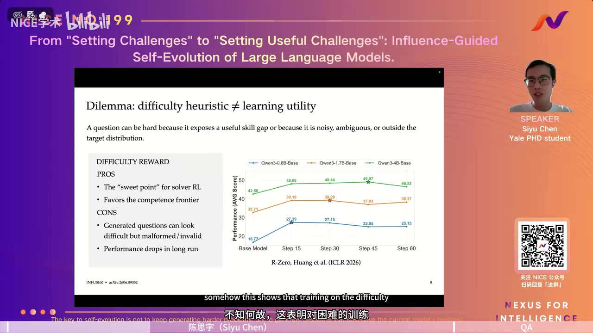
00:16:00陈思宇直接改进反馈可以写成：先用生成器给出一批题，分别在这些题上训练解题器，得到更新后的参数；再比较更新前后的目标表现，将差值返回生成器。这个方案能追踪一份数据到底带来了多少收益，却要反复执行昂贵的内层训练。我们的目标是保留“衡量效用”这一点，同时把成本降下来。
00:17:00陈思宇在图示的直接反馈方法里，生成器提出多道题，每道题对应一次训练和目标评估，再把各自的性能差用于训练生成器。这个分数可以更忠实地归因于结果，却意味着需要很多份更新后的解题器状态。报告把这一点作为进入双层优化建模的理由：我们不想只换一个难度函数，也不想付出完整重训的代价。
00:18:00陈思宇为此，我们把共同进化看作生成器与解题器的双层博弈。目标分布可以是未来真正关心的基准或用户任务；它的表现用 J 表示。生成器负责提供课程，解题器在该课程上更新。生成器希望最大化解题器更新后的目标表现，因而外层选择课程、内层训练解题器。但精确求解仍包含嵌套的强化学习。我们于是只考察解题器在当前课程上走一步优化之后的局部变化。
00:19:00陈思宇生成器在“上层”决定课程，解题器在“下层”根据课程学习；最终目标不是生成器自己的答题率，而是解题器在目标分布上的表现。若严格按这个定义计算，外层每次改变课程，都要重新求解一次内层训练。为了得到可执行的近似，讲者将完整内层求解替换为当前参数附近的一步更新，并观察这一步对目标表现的影响。
00:20:00陈思宇对这一小步更新造成的目标表现变化作一阶泰勒展开：主要项是目标表现梯度与优化更新方向的内积，余项随步长平方缩小。报告指出，强化学习通常使用较小的学习率，因此一阶近似具有可操作性。先以 SGD 为例，批次更新是逐题梯度的汇总，于是可把近似的性能变化分配到每道题上，得到逐题影响力分数。
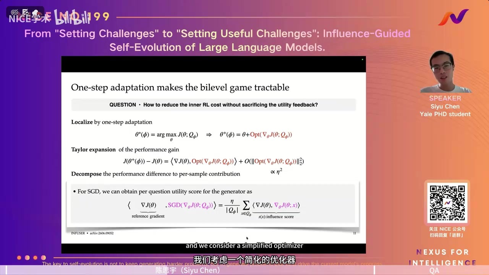
00:21:00陈思宇一阶项将“朝某道题的训练方向移动”与“朝目标题的性能上升方向移动”联系起来。SGD 的情况最便于说明：一个批次的更新可分解成各题贡献，所以每题都能得到一个近似效用分数。讲者强调这是局部近似，不是声称一步表现变化等同于长程训练的真实结果；小学习率使忽略高阶项成为可考虑的工程选择。
00:22:00陈思宇实际训练常用 AdamW，而不是简单的 SGD。此时不能直接把逐题梯度当成更新方向；我们需要考虑优化器的预条件处理，用“这道题引起的一步 AdamW 更新”来计算分数。实现中还把梯度内积换成余弦相似度，因为原始内积会受梯度大小和回答长度影响。长短回答造成的梯度量级差异，不应仅凭大小就决定哪道题更有用。影响力分数试图回答的是：若朝着这道题给出的方向更新，目标任务会不会受益。
00:23:00陈思宇AdamW 会按优化器状态调整不同参数的更新，因此‘同一梯度方向’并不完全代表真实的一步移动。报告在分数里显式纳入这一步更新。余弦相似度着重比较两个方向是否一致，弱化因文本长度和梯度范数产生的尺度差异。分数高的题目意味着它的训练方向更贴近开发集所代表的目标方向，生成器随后更倾向于提出类似题。
00:24:00陈思宇把这些部分合起来就是 INFUSER：生成器从非结构化文档中产出选择题或开放题及其参考答案；解题器回答并按正确与否获得二元奖励，执行 RLVR。另一方面，从目标分布取一个小型开发集，计算当前解题器在这些目标题上的梯度；再将它与每道生成题引起的更新方向比较，得到影响力分数，并作为生成器的训练奖励。报告的实验用 800 道 SuperGPQA 题构造开发集，另从 STEM 教材收集非结构化材料。
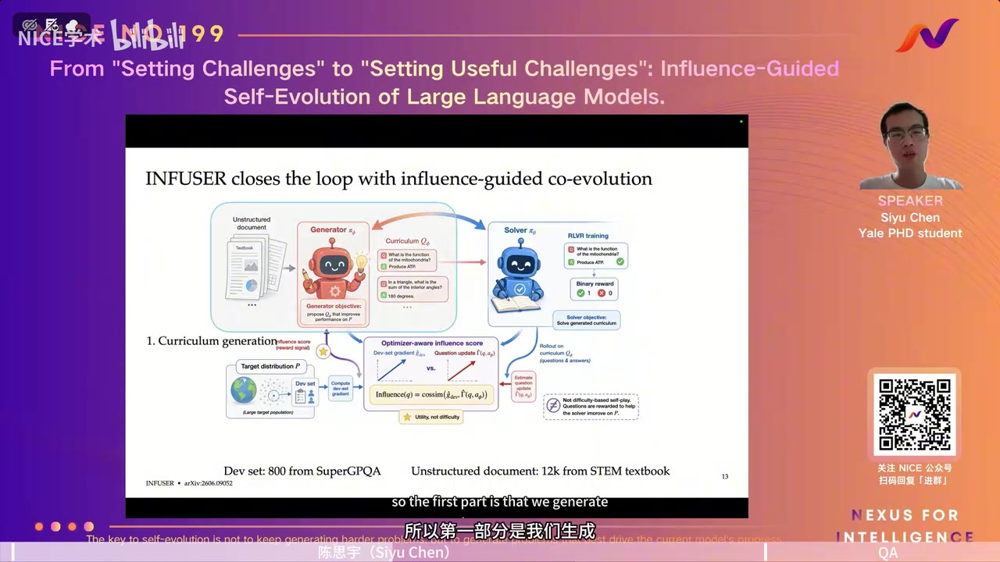
00:25:00陈思宇画面的完整流程里，左侧是文档与生成器，右侧是解题器的作答和二元奖励；下方小型开发集提供目标方向，不直接替代生成器输出的训练题。作者在报告中说开发集取自 SuperGPQA 的 800 道题，文档则来自 STEM 教材。每轮都要根据当前解题器重新计算影响力，因此相同题目对不同训练阶段的解题器可能有不同价值。
00:26:00陈思宇回顾一下：静态生成器会成为瓶颈，解题器需要动态课程；按难度给分未必保证收益，直接重训测量收益又太昂贵。一步近似提供了较便宜的逐题影响力分数，因此生成器学的是‘哪些题真正帮助当前解题器’，而不只是‘哪些题让它一半答对’。这个连续分数随后用于生成器强化学习，也带来了如何稳定训练生成器的新问题。
00:27:00陈思宇这一点也是与难度课程的根本差别：50% 答对率仅告诉我们题目处于某个学习前沿，影响力分数进一步尝试估计它是否朝目标分布的方向推动模型。讲者把系统概括为四个阶段，包含课程生成、解题器 RLVR、目标梯度测量和生成器更新。后面实验将分别检验性能、生成题质量以及连续奖励训练的稳定性。
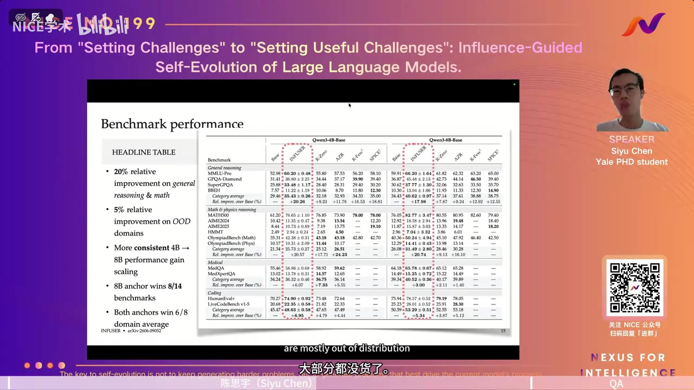
00:28:00陈思宇实验用 Qwen3-4B-Base 和 Qwen3-8B-Base 作初始模型，覆盖一般推理、数学与物理、医疗、编程等基准。由于文档池主要来自 STEM 教材，前两类更接近训练材料分布，医疗与编程更多是分布外测试。报告中的主要结果是一般推理与数学的相对提升约 20%，分布外领域提升较温和；在 4B 到 8B 的比较中，INFUSER 的收益保持得比一些基线更稳定。这并不意味着影响力分数可以直接优化所有分布外任务。
00:29:00陈思宇报告中的‘分布内’与‘分布外’是相对于教材池和目标开发集的设置而言，并不是说医疗和代码任务完全没有任何相关知识。幻灯片列出 4B、8B 两组模型及多项基准；在一般推理、数学和物理上，收益更明显。医学和编程仍有改进，但幅度较小，也说明生成器受目标梯度所指定的优化方向影响。讲者没有把 4B 到 8B 的趋势直接外推到更大模型。
03 实验、生成题质量与消融
00:30:00陈思宇接着看训练过程。以开发集正确率衡量，INFUSER 的曲线持续高于固定生成器的基线，到约 100 步仍在改善；仅靠简单难度启发式，后期可能退步。生成器自身的影响力奖励却有一个看似反常的现象：共同训练时，分数先下降，随后围绕零波动。原因是解题器也在移动，生成器追逐的是不断变化的目标。如果把解题器冻结在初始状态，生成器面对固定参照时，影响力分数就会持续上升。
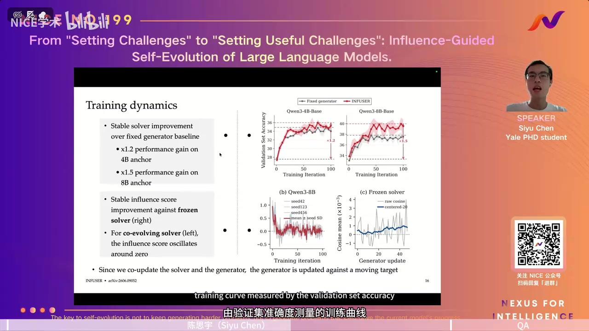
00:31:00陈思宇如果只看两套共同进化网络的原始奖励曲线，很容易误以为生成器没有学会什么。冻结解题器的对照实验解决了这个歧义：参照不动时，生成器确实越来越能提出沿该参照目标改进的题；共同训练时，参照模型的能力边界也在变化，所以分数围绕零并不自动代表失败。判断是否真正进步，还得回到解题器在未用于本轮训练的任务上的表现。
00:32:00陈思宇我们还要看生成题目的质量。报告让 GPT-5.4 和未经训练的 Qwen3-8B-Base 作答不同训练阶段生成的题，并比较它们与生成器参考答案的一致率。较强模型的正确率上升，而初始模型的正确率保持较低，二者差距从约 5 个百分点扩大到约 13 个百分点。这被作者解释为：题目对原始模型更有挑战，同时仍能由较强模型解出。一个具体例子中，早期题目条件不充分、参考答案也错；第 90 步的题目表述更自足，数学条件与逻辑更严谨。
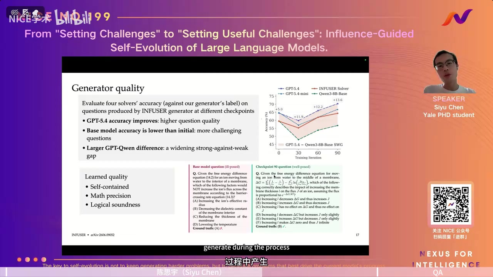
00:33:00陈思宇这里使用较强模型作“近似判别者”，并不等于证明每个参考答案都正确。曲线展示的是与生成器标签的一致程度；随着训练推进，强模型一致率上升，而初始解题器的答对率在早期明显下降后仍低于起点。讲者用一道关于膜通量与自由能的例题对照：初始版本题意和给定答案存在问题，后期版本的条件、选项和正确答案更吻合。
00:34:00陈思宇消融实验问：究竟哪些部件带来收益？比较包括冻结初始生成器、只用开发集训练、换成更强但固定的 32B 或 Gemini 生成器。只用开发集的对照也检验目标开发集是否泄漏了全部收益。总体上，INFUSER 在一般推理、数学和编程等领域有优势，但医疗领域并非始终第一。与使用 Gemini 生成器的 General-Reasoner 比较时，后者在一些一般知识题上更强；INFUSER 在数学与物理上更好。作者认为，更强生成器可能注入更多知识，而共同进化生成器更能提出需要解题器发展推理技能的问题。
00:35:00陈思宇冻结初始生成器的对照检查“共同进化是否必要”；只训开发集检查“是不是直接从目标样本学到了答案”；更强的固定生成器检查“直接换更大出题模型是否足够”。这些实验没有显示 INFUSER 在每个领域绝对最好：医疗任务是例外。对 General-Reasoner 的讨论也区分了知识丰富度与推理训练价值；生成的问题包含更多现成知识，不一定最能推动解题器形成严谨推理能力。
00:36:00陈思宇分布外的医疗和编程则不是一边倒：不同系统各有胜负。接下来谈连续影响力奖励的训练难题。影响力分数介于 -1 与 1 之间，有噪声，不像对错奖励那样是二元值。若直接套用标准 GRPO 的组内标准化，很小的组内差距也可能被放大；若完全不做组内标准化，差距特别大的组又可能支配整个梯度。我们提出双重归一化的 DuGRPO，在两者之间折中。
00:37:00陈思宇连续奖励还意味着组内的均值和方差会随抽样变化。对于相差仅 0.02 的两道题，把它们硬解释成相反的强正负优势，可能让生成器追逐测量误差。相差 0.8 的一组确有大得多的信号，但如果完全按全局数值使用，它又会吞没中等差距组的信息。算法设计要同时照顾这两头。
04 DuGRPO、扩展与局限
00:38:00陈思宇举例说，三组题的奖励分别是 0.49/0.51、0.45/0.55 和 0.10/0.90。第一组的差别很小，可能只是有限采样或逐题梯度计算带来的噪声；第三组的差别很大。标准 GRPO 会把每组都近似压成 -1/1，放大第一组噪声；只做批次归一化又可能让第三组主导更新。DuGRPO 在优势的分母里同时考虑组内标准差与批次标准差，组内差很小时不强行放大，组内差大时保留组内对照。
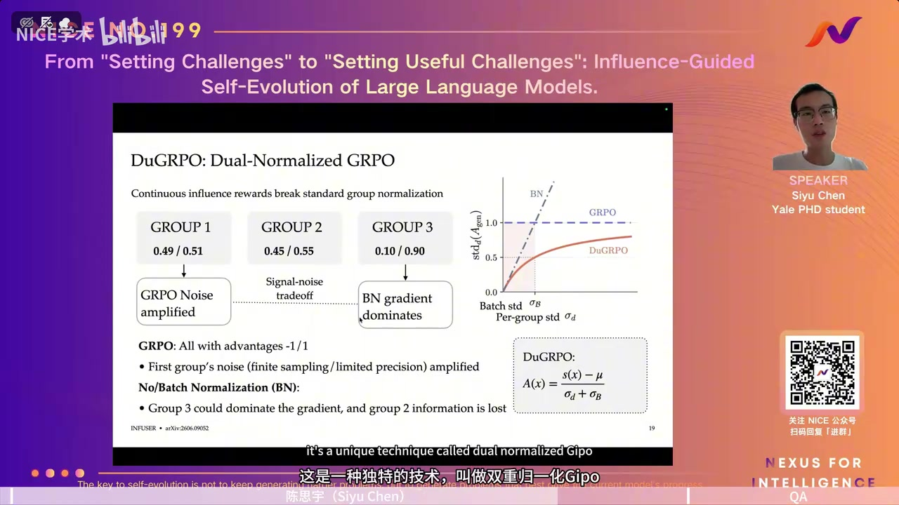
00:39:00陈思宇幻灯片用 0.49/0.51、0.45/0.55、0.10/0.90 三组数字，把噪声放大和大梯度组主导两种问题放在同一张图上。DuGRPO 的分母加上批次层面的尺度后，第一组不会因本组标准差极小而被夸大；当组内差距足够大时，仍可利用组内比较。这一设计针对的是影响力奖励的连续、带噪性质，不是简单改变二元对错奖励。
00:40:00陈思宇这种设计让连续奖励既有组间尺度，也保留必要的组内信息。消融显示，只做组内标准化、只做批次标准化，或忽略 AdamW 的优化器感知更新，都不如完整方法，尤其在一般推理和数学等与训练材料更接近的任务上。接下来，报告讨论一个实际限制：如果初始解题器在困难数学题上很弱，INFUSER 是否能直接把它带起来？
00:41:00整理说明讲者还比较了另一种看似简化的影响力分数：不考虑 AdamW 的预条件处理，只看传统 SGD 式方向。它与只做组内或批次标准化的替代方案一样，效果不如完整设置。这些对照支持两个判断：奖励本身需要反映实际优化器的一步更新，生成器的强化学习算法也要适应奖励的尺度与噪声。
00:42:00陈思宇部分随机种子下，困难数学表现不稳定。作者观察到模型可能没有形成足够长的思维链，导致数学成绩下降。为解决这个冷启动问题，他们先混入一部分带规则可验证答案的数学 RLVR 数据，让模型学会较长的推理轨迹，再继续使用 INFUSER 的生成题目。图中这种混合训练使数学结果更集中，均值也略有提高。作者强调，这说明影响力反馈受当前解题器能力约束；如果某种推理模式根本尚未出现，单靠当前影响力分数未必能把它诱导出来。
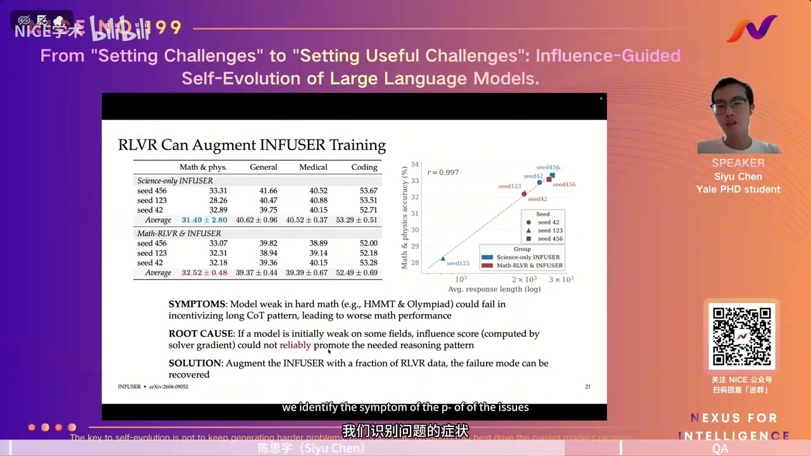
00:43:00陈思宇数学中较难的 HMMT、奥赛类题目尤其容易暴露这一点：弱初始模型可能生成短而不足的推理，根本无法获得需要的长链思考。数学 RLVR 的热身在某种程度上先补足可用的推理模式，之后影响力引导的课程才更有效。作者把这部分称为扩展实验，而不是说主体方法在所有起点都能独立完成冷启动。
00:44:00陈思宇总结来看，核心主张是用题目对目标能力的‘效用’，而不只用题目‘难度’，来训练生成器。Qwen3 的 4B、8B 实验支持这一点；论文还在 OLMo 模型上测试，13 项基准中有 10 项优于固定生成器。局限同样明确：逐题梯度比普通批量更新慢，虽然仍比对每题完整重训便宜；生成问答的质量不完美，报告提到较强模型对生成参考答案的一致率最高也只有约四分之三。
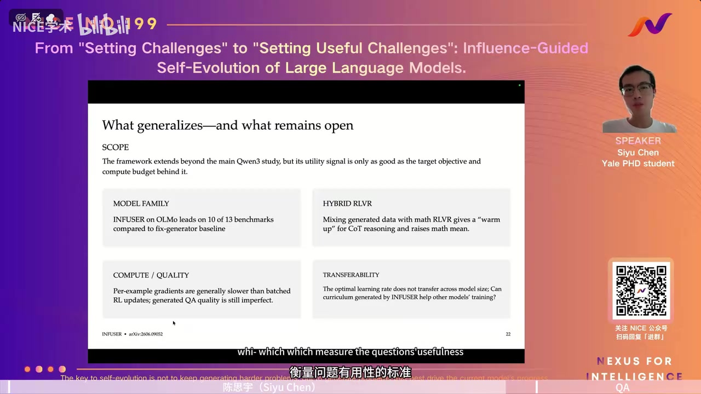
00:45:00整理说明讲者区分了几类边界。方法可延伸到另一个模型家族，但收益依赖目标设置与计算预算；每题梯度虽然比精确的逐题重训便宜，却不如普通批量 RL 更新快；生成器产出的题目和标签仍有错误，因而较强模型的一致率也并非接近百分之百。迁移方面，不同大小模型的最佳生成器学习率可能不同。
00:46:00陈思宇跨模型规模的迁移也不能直接保证。生成器与解题器各自的学习率需要适配；一个更新太快、另一个太慢，可能使生成器过拟合当前解题器，或造成两者节奏不匹配。报告最后重申：‘有用’与‘难’不是一回事。主持人感谢分享，接下来围绕影响力分数、验证、共同进化及方法边界提问。
00:47:00陈思宇如果解题器跑得太快，生成器可能追不上当前能力前沿；若生成器与解题器节奏配置相反，也会产生不合适的反馈。作者并未声称找到通用学习率。结束时，讲者再次把报告标题落到一句话上：可扩展的课程目标应当是训练效用，不是把题目越出越难。随后主持人转入问答。
05 现场问答
00:47:00主持人参考答案由生成器自己写出，可能有错。是否会出现错误答案却得到较高影响力分数的假阳性？有没有额外控制？
00:47:00陈思宇开发集使用约 800 道 SuperGPQA 题，它也可能有缺陷，但由具备相关专业背景的人标注，我们认为质量高于当前生成器，因而仍能提供改进方向。主持人追问，影响力分数衡量的是训练效用，未必能验证答案正确；是否该加一层验证？
00:48:00整理说明主持人的疑虑是，影响力分数衡量‘按生成题更新的方向是否有利’，不能直接证明题目或金标准答案无误。若参考答案错了，这一训练信号仍可能影响解题器。讲者的回答强调开发集质量相对较高，但也承认 SuperGPQA 本身不是绝对无误的完美真值，因此这里仍存在验证问题。
00:49:00陈思宇当前工作没有让更大的模型或人工逐题核验生成的问题和答案。这是有意保留‘自我改进’的设定：如果引入外部强模型或人工标注，循环的性质就会改变。不过，验证确实重要。将来可以在生成器之后加入验证器，形成提出问题、验证问题、再按影响力反馈改进的流程；如何同时改进这些环节，本论文还没有解决。
00:50:00整理说明主持人提出的额外验证层，可以是独立模型或规则流程；讲者承认它可能提高数据质量，但若使用远比当前模型更强的教师或大量人工，就改变了论文想检验的‘低外部监督、自我改进’设定。因此他把生成题核验与验证器的共同进化视作后续工作，而不是现有 INFUSER 已解决的模块。
00:50:00主持人现在用的是一步影响力近似。它是否足以代表多步训练的最终收益？能否扩展成多步影响力？
00:50:00陈思宇原则上可以，但多步需要真正执行几轮解题器更新，再衡量表现变化；一阶泰勒展开会变得不那么简洁，计算成本也会上升。主持人补充说，现实训练不一定每一步都朝局部最优前进，因此多步效应值得研究，但理解了当前方案选择一步近似的数学与工程原因。
00:51:00整理说明多步方法与一步方法的取舍，不只在公式好不好看。若要计算两步、三步的真实效果，必须让解题器在这些题上连续更新，再计算目标表现变化，计算量会逐步接近先前批评的直接改进反馈。主持人提醒，一步局部方向并不保证长期最优；讲者同意可以扩展，只是当前论文选择了较清晰、较可负担的一步近似。
00:52:00主持人共同进化时影响力分数接近零，是否一定是好事？也可能生成器和解题器进入一个不再提高的坏平衡。
00:52:00陈思宇单看分数围绕零波动，确实无法区分‘生成器持续追上正在进步的解题器’和‘双方停滞或无效移动’。必须同时看最终解题器的验证表现、生成器质量，以及相对固定生成器的曲线。我们的结果显示共同进化的解题器确有提升，因此不能只凭那一张分数图下结论。
00:53:00整理说明主持人指出两种完全不同的情形都可能画出“分数接近零”的图：一种是双方都有进步，生成器不断追上解题器；另一种是双方都没取得实质改进。讲者同意不能单靠这张图判定。上方验证准确率曲线、与固定生成器的比较，以及冻结解题器时生成器奖励上升，共同构成了他们支持“不是坏平衡”的证据。
00:54:00主持人开发集固定为800道题。如果系统长期自我进化，开发集是否也应动态更新？怎样保证多样性与质量？
00:54:00陈思宇论文做了开发集规模消融，从100、200、400到800题，规模增大时结果改善；400到800的边际收益已很小。800题的平均梯度能平滑不少噪声。动态抽样是合理方向，但需要更大的题库；在现有实验中，没有看到“只抽一部分”相对于“全部使用”的明确性能优势。若题库将来更大，为控制每轮成本，抽样会更有意义。
00:55:00整理说明开发集是生成器目标方向的参照，不是每轮都拿来当解题器的全部训练题。主持人关心固定目标会不会缺少新的知识和任务类型。讲者说从100增至400题确有收益，从400到800进一步扩大则收益变小；他们尚未拿一个万题级动态目标池展示明显更好的结果。如果计算资源受限，每轮从大池抽几百题可节约梯度计算。
00:57:00主持人你们最大的模型是32B吗？
00:57:00陈思宇32B是固定生成器对照，主实验的共同进化模型是4B和8B。
00:57:00主持人更大规模值得试，不过资源成本会很高。
00:57:00陈思宇从4B到8B，相对收益比一些基线更稳定，这是积极信号，但不能据此保证32B或更大模型也有同样收益。
00:58:00整理说明作者明确纠正了“32B是最大共同进化模型”的理解：那个规模只出现在固定生成器的对照中。虽然8B相比4B的相对改进比较稳定，但模型规模继续扩大时，梯度估计、学习率及训练节奏都可能需要重调。现有两点不足以建立可靠的规模定律。
00:58:00整理说明主持人最后问：影响力分数目前用于选训练数据。如果把递归改进扩展到整个强化学习流程，包括奖励验证器、生成策略、优化器和更新规则，它还能用吗？
00:58:00陈思宇影响力分数原本衡量的是训练样本与目标题目更新方向的关系，适合分配数据的贡献；若要选择学习率、优化器或训练配方，它并不是合适的信用分配工具。那类问题更适合通过自动化实验搜索，让智能体试验不同配置再比较结果。这是影响力分数的适用边界。
00:59:00整理说明主持人的问题把“改进训练数据”扩展到“改进整个研发流程”。讲者区分了信用分配的对象：样本级影响力可问某道题的梯度是否有益，却不擅长判断换一个优化器、调整采样策略或改奖励验证器后整体系统如何变化。那需要在更高层面运行实验、比较配置，可能交由自动科研智能体执行。
01:00:00陈思宇陈思宇补充：在更大的自动化研究流程里，可以让智能体试验不同学习率、优化器或算法配置，再用实际实验结果判断优劣；样本影响力分数本身无法替代这些系统级比较。主持人表示今天正好到结束时间，部分问题来自线上听众。他感谢陈思宇的分享，邀请有后续问题的听众与讲者联系，并向大家道别。
01:01:00整理说明报告最后的回答没有把INFUSER宣称为通用的递归自我改进框架，而是明确把它限定在“怎样判断训练题对目标解题能力有用”这一问题上。其他训练环节的自我修改，还需要各自相应的评估信号。